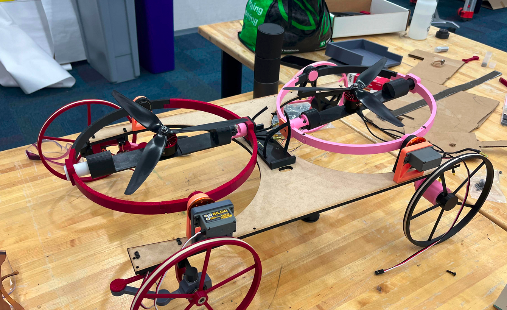

RL Wall Street
Trevor McDonald, Pia Swarup, Aditi Lagisetty, Premkumar Sethumadhavan · CompRobo

Main Idea
We are building a thrust vectoring chassis for a robot that will be able to climb walls. It is based on the VertiGo project from ETH Zurich.
The computational aspect of the robot we want to capitalize on for this project is using reinforcement learning to train a neural network to serve as the controller of our robot through simulation. Essentially, instead of hand calculating the dynamics of the system and then creating a controller around that, we want to use simulation, particularly Isaac Sim and Isaac Lab, to create a representation of the real world and our robot to allow our neural network to learn the dynamics of the world as well as how to respond to the instructions we provide it.
Specifically, the neural network may take in data from the IR sensors, the current absolute positions of the gimbals, the current thrust values, data from the IMU, and the target vector input.
Then it will output the gimbal position and thrust value it should perform to get to the inputted vector state. When trying to do a floor to wall transition versus following input controls for simple navigation, we can modify our reward function to consider the IR inputs or ignore them.
Motivation
We are building a wall climbing robot for our PIE project and would like to simplify the controls of the robot using a learning model. This directly impacts our PIE project since it will simplify teleoperation and automating robot movement. We are all also interested in understanding and using reinforcement learning to simplify solving hard controls problems that may have potential gaps in the understanding physics can provide, leading us to want to investigate using deep learning for potential meaningful generalization.
There are several applications of our project, such as for entertainment purposes (what Disney is planning to use it for) or to access walls and parts of buildings that are not easily accessible to people. It could also be used for inspection of dangerous areas, such as chemical plants.
MVP and Stretch Goals
Our MVP is a neural network that, given a vector, will output the gimbal positions and propeller RPM to accelerate the robot to match that vector. Additionally, when given a vector that points towards a wall (which the network will identify through cases where the IR sensor readings are the same and a state value for flipping is inputted into the network) the model should output the proper gimbal angles and thrust values to flip the robot onto the wall.
Our stretch goal is to test the models in real life on the robot by performing sim2real.
Links
Our latest progress, including simulation videos, is in our Milestone 1 update. Our code is in our GitHub repository, and our project is inspired by VertiGo from ETH Zurich.